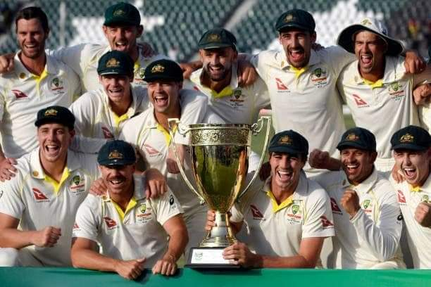

Home
Explore
Notification
Message
Bookmarks
List
Profile
More
What's Happening?

@ICC
Champions
#OnThisDay in 2014, Australia won the ICC Women's @T20WorldCup for the third time 👏 They beat England by six wickets in the final in Dhaka!
@RealHassan
- Thankyou Team Australia for visiting Pakistan . Also, I am well aware that my recent performance has been below par. Here, I would like to thank my captain #BabarAzam & all the fans for supporting & believing in me I will come back stronger inshAllah

Trends For You
Trending In Pakistan
8,720 tweets
#Srilanka Crisis
8,720 tweets
Trending In Pakistan
8,3660 tweets
#SupremeCourtOfPakistan
8,3660 tweets
Trending In Pakistan
8,2060 tweets
#AmirLiaqat
8,2060 tweets